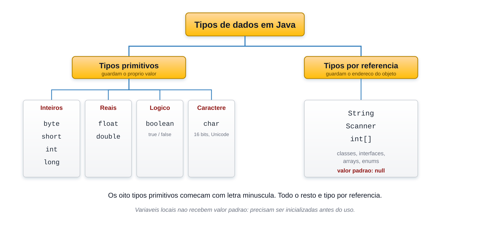
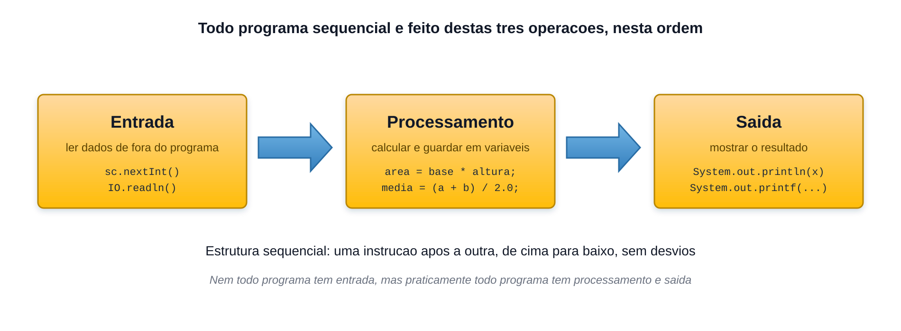
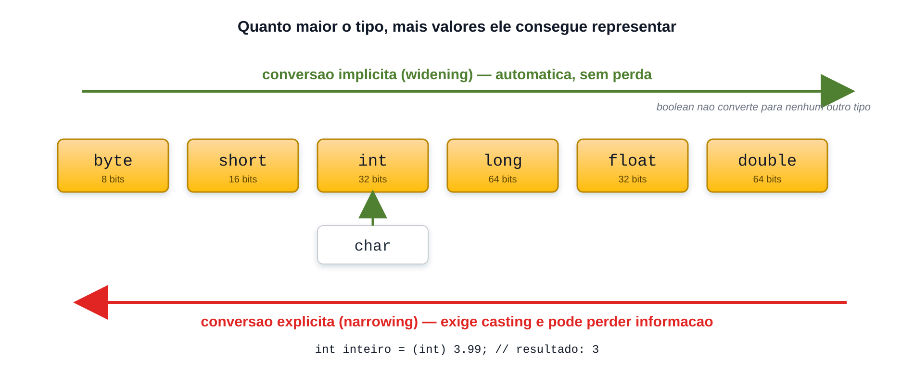

Variáveis, tipos, expressões, entrada, processamento e saída: tudo o que um programa faz de cima para baixo, sem desvios.
Seção 3 · Aulas 21 a 32
Roteiro da aula
Seis blocos de conteúdo
Bloco
Conteúdo
1
Variáveis e tipos básicos
2
Expressões aritméticas
3
As três operações básicas
4
Saída de dados
5
Processamento de dados e casting
6
Entrada de dados e funções matemáticas
BLOCO 1 DE 6
Variáveis e tipos básicos
Java é estaticamente tipada
Toda variável tem um tipo, e ele não muda
int idade; // declaração
idade = 25; // atribuiçãoint quantidade = 10; // declaração com inicialização
Uma variável é um espaço nomeado na memória, capaz de guardar um valor de um tipo determinado.
Dois grandes grupos
Tipos de dados em Java

São exatamente oito
Os tipos primitivos
Tipo
Tamanho
Faixa ou conteúdo
byte
8 bits
-128 a 127
short
16 bits
-32.768 a 32.767
int
32 bits
cerca de -2,1 bi a 2,1 bi
long
64 bits
inteiros de faixa muito ampla
float
32 bits
cerca de 7 dígitos de precisão
double
64 bits
cerca de 15 dígitos de precisão
boolean
—
true ou false
char
16 bits
um caractere Unicode
No dia a dia, quatro resolvem quase tudo: int, double, char e boolean — mais a classe String, que não é primitiva.
Inicialize antes de usar
Variável local não tem valor padrão
int total;
System.out.println(total); // ERRO DE COMPILAÇÃOint quantidade = 10;
System.out.println(quantidade); // 10
Usar uma variável local sem inicializar causa erro de compilação: variable total might not have been initialized.
O valor escrito no código
Literais e sufixos
Funciona
long pop = 8_100_000_000L;
float altura = 1.75f;
double preco = 49.90;
int hex = 0x2A;
int bin = 0b101010;
int legivel = 1_000_000;
Não compila
long pop = 8100000000;
// integer number too largefloat altura = 1.75;
// possible lossy conversion// from double to float
Todo literal inteiro é int por padrão; todo literal com ponto é double. Quando isso não serve, o sufixo é obrigatório.
A aspa denuncia qual é qual
char e String
char letra = 'A'; // aspas simples, UM caractere
String nome = "Alexandre"; // aspas duplas, zero ou maischar c = 'A';
System.out.println(c); // A
System.out.println((int) c); // 65
System.out.println(c + 1); // 66 — virou int na operação
Um char é numérico por dentro: ele guarda o código Unicode do caractere.
Duas listas diferentes
O que o compilador exige e o que a comunidade espera
O compilador exige
Letras, dígitos, _ e $ — nunca começando com dígito
Nada de palavras reservadas
Maiúsculas e minúsculas são diferentes
A comunidade espera
Variáveis e métodos em camelCase
Classes em PascalCase
Constantes em MAIUSCULAS_COM_UNDERLINE
Sem acentos, cedilha ou espaços
A prova de certificação cobra a primeira lista: o que compila, não o que é elegante.
A distinção necessária agora
Primitivos e String
int idade = 25;
double altura = 1.72;
boolean ativo = true;
String nome = "Ana";
Os oito tipos primitivos guardam valores simples. String é o primeiro tipo de referência usado no curso.
Somente o que será usado nesta seção
Escolha o tipo pelo valor
int quantidade = 12; // número inteirodouble preco = 19.90; // número decimalchar inicial = 'A'; // um caractere
String produto = "Caderno"; // texto
Objetos, endereços, pilha e heap serão estudados com orientação a objetos. Eles não são necessários para os cálculos desta seção.
Duas palavras que aparecem em código alheio
var e final
var — inferência (Java 10)
var idade = 25; // intvar nome = "Maria"; // Stringvar x; // erro
final — atribui uma vez só
final double PI = 3.14159;
final int MAXIMO = 3;
PI = 3.15; // erro
varnão torna Java dinamicamente tipada: o tipo é fixado na compilação. O curso segue com declarações explícitas.
Desafio rápido
Qual destas declarações não compila?
long n = 8_100_000_000L;
float f = 1.75;
double d = 49.90;
RESPOSTA
Não compila: 1.75 é um literal double, e ele não cabe em float sem o sufixo f.
Mão na massa · Bloco 1
Pratique na IDE: variáveis e tipos
Crie a classe Tipos e declare uma variável de cada um dos oito primitivos, com um valor válido. Imprima todas com println.
Escreva long populacao = 8100000000; e float altura = 1.75; Leia as duas mensagens de erro e conserte com os sufixos.
Declare int total; e tente imprimir. Depois atribua um valor antes da saída e compare os resultados da compilação.
Com char letra = 'A'; imprima letra, (int) letra e letra + 1. Explique por que só o primeiro mostra a letra.
Troque suas declarações por var e marque uma delas como final. Tente reatribuí-la e leia o erro.
BLOCO 2 DE 6
Expressões aritméticas
O que é uma expressão
Todo cálculo tem um valor e um tipo
Operador
Nome
Exemplo
Resultado
+
adição
7 + 3
10
-
subtração
7 - 3
4
*
multiplicação
7 * 3
21
/
divisão
7 / 3
2
%
resto da divisão
7 % 3
1
Não existe operador de potenciação em Java. Para elevar um número, usa-se Math.pow.
Se os dois operandos são inteiros, a divisão é inteira e a parte fracionária é descartada, não arredondada. Basta um deles ser decimal para o resultado ser decimal.
Converter na hora errada
Tarde demais não recupera nada
int a = 10, b = 3;
System.out.println(a / b); // 3
System.out.println(a / (double) b); // 3.3333333333333335
System.out.println((double) (a / b)); // 3.0 ← a divisão já foi inteira
Converter o resultado não traz de volta o que já se perdeu. É preciso converter antes de dividir.
int total = 3725;
int horas = total / 3600;
int minutos = (total % 3600) / 60;
int segundos = total % 60;
// 1 h 2 min 5 s
O tipo muda o desfecho
Divisão por zero
Expressão
O que acontece
10 / 0
ArithmeticException / by zero
10 % 0
ArithmeticException / by zero
10.0 / 0
Infinity
-10.0 / 0
-Infinity
0.0 / 0
NaN (Not a Number)
Divisão inteira por zero derruba o programa. Divisão de ponto flutuante por zero não lança exceção nenhuma.
A ordem da matemática
Precedência de operadores
7 + 3 * 2 // 13 — a multiplicação vem primeiro
(7 + 3) * 2 // 20 — o parêntese muda a ordem
10 - 4 - 3 // 3 — avalia (10-4) e depois -3
20 / 5 * 2 // 8 — e não 20/(5*2)
*, / e % têm a mesma precedência entre si e são avaliados da esquerda para a direita. O mesmo vale para + e -. Na dúvida, use parênteses.
Do papel para o código
A fórmula tem duas dimensões; o código tem uma linha
Fórmula
Em Java
soma de a e b, dividida por 2
(a + b) / 2.0
base vezes altura, dividido por 2
base * altura / 2.0
1 dividido por (1 mais x)
1.0 / (1 + x)
O erro mais comum é esquecer o parêntese do numerador: a + b / 2 calcula a mais a metade de b — e não a média entre os dois.
Desafio rápido
Quanto vale 10 / 4 em Java?
2.5
2
3
RESPOSTA
Dois operandos int produzem divisão inteira: a parte fracionária é descartada, não arredondada.
Desafio rápido
Ache o erro
// média entre duas notasint nota1 = 7, nota2 = 8;
double media = nota1 + nota2 / 2;
RESPOSTA
Faltou o parêntese: nota2 / 2 é calculado primeiro, e o resultado é 11.0, não 7.5. O correto é (nota1 + nota2) / 2.0 — com o 2.0, senão a divisão ainda seria inteira.
Mão na massa · Bloco 2
Pratique na IDE: expressões aritméticas
Imprima 10 / 3, 10.0 / 3, 10 / 3.0 e (double) (10 / 3). Explique por que o último dá 3.0.
Converta 3725 segundos em horas, minutos e segundos usando só / e %. A saída deve ser 1h 2min 5s.
Calcule a média de duas notas. Escreva primeiro n1 + n2 / 2, veja o resultado errado e conserte com parênteses.
Imprima 1 + 2 + " reais" e "reais " + 1 + 2. Anote por que os dois resultados são diferentes.
Execute 10 / 0 e depois 10.0 / 0. Anote qual quebra o programa e qual imprime Infinity.
BLOCO 3 DE 6
As três operações básicas
Todo sistema se reduz a isto
Entrada, processamento e saída

Onde estamos no curso
Três estruturas, três seções
Estrutura
O que faz
Onde
Sequencial
executa tudo em ordem, uma vez
Seção 3
Condicional
escolhe entre caminhos alternativos
Seção 4
Repetitiva
repete um trecho enquanto valer uma condição
Seção 5
Estrutura sequencial: uma instrução após a outra, de cima para baixo, sem desvios e sem repetições.
A leitura pelo teclado aparece no Bloco 6. Até lá, valores fixos permitem estudar a ordem das operações sem antecipar Scanner.
A forma mais barata de achar um erro
Teste de mesa
int a = 10;
int b = 3;
int c = a / b;
a = c + b;
Linha
a
b
c
int a = 10;
10
—
—
int b = 3;
10
3
—
int c = a / b;
10
3
3
a = c + b;
6
3
3
c vale 3, e não 3.33: a divisão entre dois int é inteira.
Desafio rápido
Faça o teste de mesa: quanto vale x no fim?
int x = 7;
int y = 2;
int z = x / y;
x = z * y;
7
6
8
RESPOSTA
z = 7 / 2 dá 3, porque os dois são int e a divisão é inteira. Depois x = 3 * 2 = 6. O resto se perdeu na divisão e não volta.
Desafio rápido
Ache o erro
// Média de duas notasdouble media = (n1 + n2) / 2.0;
double n1 = 7.5;
double n2 = 8.0;
System.out.println(media);
RESPOSTA
O processamento veio antes da entrada. O programa roda de cima para baixo: n1 e n2 precisam existir e já ter valor antes de entrar na conta. A ordem é sempre entrada → processamento → saída.
Mão na massa · Bloco 3
Pratique na IDE: entrada, processamento e saída
Escreva um programa que usa um raio fixo e mostra a área do círculo, separando as partes com os comentários // entrada, // processamento e // saída.
Antes de executar, faça o teste de mesa no papel com raio 2. Depois rode e compare com o que você previu.
Mova a linha do cálculo para antes da declaração do raio. Leia o erro de compilação e explique por que ele acontece.
Acrescente uma segunda saída mostrando também o perímetro — sem criar uma nova entrada.
Comente a linha da saída e execute de novo. O programa ainda calcula? Explique como ele pode processar sem mostrar nada.
BLOCO 4 DE 6
Saída de dados
Três formas de escrever no console
print, println e printf
System.out.print(x)
escreve e não quebra a linha
System.out.println(x)
escreve e quebra a linha
System.out.println()
escreve apenas uma quebra de linha
System.out.printf(f, ...)
escreve com formatação, sem quebrar a linha
Existe também System.err, a saída de erro — aquela que a IDE mostra em vermelho.
A avaliação é da esquerda para a direita. No primeiro caso, o 2 já encontra uma String pela frente e é concatenado; no terceiro, a soma acontece antes de o texto aparecer.
Caracteres que a barra invertida libera
Sequências de escape
Escape
Significado
\n
quebra de linha
\t
tabulação
\"
aspas duplas
\\
barra invertida
"Linha 1\nLinha 2""Nome:\tMaria""Ele disse \"ola\"""C:\\Users\\Maria"
Controlando como o número aparece
Especificadores de formato
O primeiro argumento do printf é o texto de formato; os demais preenchem os marcadores, na ordem.
Os colchetes não fazem parte do formato — estão ali só para revelar o preenchimento. 3,14 tem 4 caracteres; os outros 6 são espaços até fechar a largura 10. Não é tabulação: é o campo sendo completado.
O nome ocupa 15 à esquerda; o número, 8 à direita. É o alinhamento à direita que faz a vírgula cair sempre na mesma coluna.
%n usa a quebra de linha do sistema operacional; \n é sempre o caractere LF. Em printf, prefira %n.
Vírgula ou ponto?
O idioma do sistema decide — a menos que você decida antes
import java.util.Locale;
public class Formatacao {
public static void main(String[] args) {
Locale.setDefault(Locale.US);
System.out.printf("%.2f%n", 3.14159); // 3.14
}
}
Sem essa linha, uma máquina configurada em português imprime 3,14. Chame Locale.setDefault uma única vez, no começo do main — e lembre que isso também afeta a leitura.
Java 15 em diante
Texto em várias linhas
String menu = """
=== MENU ===
1 - Cadastrar
2 - Consultar
3 - Sair
""";
System.out.print(menu);
A indentação comum a todas as linhas é removida automaticamente, então o bloco fica alinhado com o código sem sujar a saída.
Desafio rápido
O que imprime System.out.println(1 + 2 + "3" + 4 + 5);?
3345
15
12345
RESPOSTA
1 + 2 ainda é soma e dá 3. A partir da String, tudo à direita vira concatenação.
Mão na massa · Bloco 4
Pratique na IDE: saída de dados
Escreva três linhas com print e depois as mesmas com println. Compare o console nos dois casos.
Imprima "Total: " + 2 + 3 e "Total: " + (2 + 3). Explique a diferença.
Monte um único printf usando %s, %d, %.2f e %b, passando quatro variáveis na ordem.
Monte uma tabela de três produtos com "%-15s %8.2f%n". Confira se as vírgulas caem todas na mesma coluna.
Acrescente Locale.setDefault(Locale.US) na primeira linha do main e rode a tabela de novo. Anote o que mudou.
BLOCO 5 DE 6
Processamento de dados e casting
O = não é igualdade
Atribuição copia o valor da direita para a esquerda
Por isso isto faz sentido
int x = 5;
x = x + 3; // o novo x é o// x anterior mais 3
Atualização explícita
int x = 10;
x = x + 5; // 15
x = x - 3; // 12
x = x * 2; // 24
As formas abreviadas de atribuição serão apresentadas junto com as estruturas condicionais, na Seção 4.
Uma etapa de cada vez
Atualizações permanecem explícitas
int pontos = 10;
pontos = pontos + 1; // 11double saldo = 100.0;
saldo = saldo - 25.0; // 75.0
Incremento, decremento e operadores cumulativos ficam para a Seção 4. Aqui, cada atualização mostra claramente o valor anterior e a operação aplicada.
Para a direita é de graça; para a esquerda, você assina embaixo
Conversão entre tipos numéricos

O casting trunca — e pode estourar em silêncio
Duas coisas para nunca esquecer
Trunca, não arredonda
double valor = 3.99;
int i = (int) valor; // 3int errado = valor;
// possible lossy conversion
Estoura sem avisar
int grande = 300;
byte p = (byte) grande;
System.out.println(p); // 44// nenhum erro, nenhum aviso
Para arredondar em vez de truncar, o caminho é Math.round.
Antes de calcular, Java iguala os tipos
Promoção numérica, na ordem
Se um operando for double, o outro vira double.
Senão, se um for float, o outro vira float.
Senão, se um for long, o outro vira long.
Senão, ambos viram int — inclusive byte, short e char.
A quarta regra é a que surpreende: somar dois byte produz um int.
Desafio rápido
Ache o erro
byte a = 10;
byte b = 20;
byte soma = a + b;
RESPOSTA
incompatible types: possible lossy conversion from int to byte — em uma expressão aritmética, byte é promovido a int. O correto é byte soma = (byte) (a + b);
A soma produz int. O casting deixa explícita a decisão de voltar para byte.
O ponto do casting muda o cálculo
Divisão inteira e divisão decimal
Casting depois da divisão
int a = 5;
int b = 2;
double r = (double) (a / b);
// 2.0
Casting antes da divisão
int a = 5;
int b = 2;
double r = (double) a / b;
// 2.5
O primeiro cálculo perde a parte decimal antes do casting. No segundo, um operando já é double quando a divisão acontece.
double e float guardam números em base 2, e nem todo decimal tem representação exata. É o padrão IEEE 754, e vale para qualquer linguagem.
Por enquanto, basta reconhecer que o resultado pode exibir pequenas diferenças de precisão.
Desafio rápido
Quanto vale (int) 7.9?
8
7
7.0
RESPOSTA
O casting para int descarta a parte decimal. O resultado é 7.
Mão na massa · Bloco 5
Pratique na IDE: processamento e casting
Com double nota = 7.9; imprima (int) nota. Confirme que o casting trunca em vez de arredondar.
Declare byte a = 10, b = 20; e depois tente byte soma = a + b; Leia o erro e conserte com um cast.
Atualize int x = 5; usando apenas a forma explícita x = x + 1 e imprima o resultado.
Compare no papel os resultados de (double) (5 / 2) e (double) 5 / 2. Depois confirme na IDE.
Imprima 0.1 + 0.2 e registre a pequena diferença de precisão exibida.
BLOCO 6 DE 6
Entrada de dados e funções matemáticas
Três passos obrigatórios
Lendo do teclado com Scanner
import java.util.Scanner; // 1. importarpublic class Entrada {
public static void main(String[] args) {
Scanner sc = new Scanner(System.in); // 2. criar
System.out.print("Digite seu nome: ");
String nome = sc.nextLine();
System.out.println("Ola, " + nome + "!");
sc.close(); // 3. fechar
}
}
Scanner não é primitivo: é uma classe, e por isso precisa de new. Primeiro contato do curso com criação de objetos.
Um método por tipo
Métodos de leitura
Método
Lê
Devolve
sc.nextInt()
o próximo token como inteiro
int
sc.nextDouble()
o próximo token como decimal
double
sc.next()
o próximo token (uma "palavra")
String
sc.nextLine()
o resto da linha, inclusive espaços
String
sc.nextBoolean()
true ou false
boolean
sc.next().charAt(0)
o primeiro caractere do token
char
Não existe nextChar(). E um token é um pedaço de texto delimitado por espaço, tabulação ou quebra de linha.
Token não é linha
Três valores, uma linha só
System.out.print("Digite tres valores: ");
int a = sc.nextInt();
int b = sc.nextInt();
int c = sc.nextInt();
System.out.println(a + b + c);
Digite tres valores: 10 20 3060
Para o Scanner, tanto faz se os valores vêm na mesma linha ou em linhas diferentes: ele lê tokens.
A dúvida número um da seção
Por que o nextLine() foi "pulado"
Antes e depois
Uma linha resolve
Quebrado
System.out.print("Idade: ");
int idade = sc.nextInt();
System.out.print("Nome: ");
String nome = sc.nextLine();
// nome vem vazio
Corrigido
System.out.print("Idade: ");
int idade = sc.nextInt();
sc.nextLine(); // descarta
System.out.print("Nome: ");
String nome = sc.nextLine();
// agora funciona
O Locale volta — agora na leitura
Vírgula ou ponto ao digitar um decimal
Antes de criar o Scanner
Locale.setDefault(Locale.US);
Scanner sc = new Scanner(System.in);
Ou depois de criado
Scanner sc = new Scanner(System.in);
sc.useLocale(Locale.US);
Sem isso, em uma máquina em português, digitar 3.14 em um nextDouble() lança InputMismatchException: ele espera vírgula.
Escolha uma convenção e mantenha-a na entrada e na saída. Misturar as duas é confusão garantida.
Sem operador de potência nem de raiz
A classe Math
Método
O que faz
Exemplo
Math.sqrt(x)
raiz quadrada
sqrt(81.0) → 9.0
Math.pow(x, y)
x elevado a y
pow(2, 10) → 1024.0
Math.abs(x)
valor absoluto
abs(-7) → 7
Math.max / min
o maior / o menor dos dois
max(3, 9) → 9
Math.round(x)
arredonda para o mais próximo
round(3.6) → 4
Math.floor / ceil
arredonda para baixo / para cima
ceil(3.1) → 4.0
Math.random()
decimal aleatório em [0.0, 1.0)
(int)(random()*6)+1
Nesta seção, use a forma Math.operação(valor). O significado completo de membros estáticos será retomado mais adiante.
Detalhes que a prova adora
Três surpresas da classe Math
Tipos de retorno diferentes — round(double) devolve long, round(float) devolve int, e floor/ceil devolvem double.
sqrt e pow devolvem sempre double — até Math.pow(2, 3) vale 8.0, não 8.
round é floor(x + 0.5) — por isso Math.round(-2.5) é -2, e não -3.
Juntando os seis blocos
Distância entre dois pontos
Locale.setDefault(Locale.US); // ponto no lugar da vírgula
Scanner sc = new Scanner(System.in);
// 1. ENTRADA
System.out.print("x1, y1: ");
double x1 = sc.nextDouble(), y1 = sc.nextDouble();
System.out.print("x2, y2: ");
double x2 = sc.nextDouble(), y2 = sc.nextDouble();
// 2. PROCESSAMENTOdouble d = Math.sqrt(Math.pow(x2 - x1, 2) + Math.pow(y2 - y1, 2));
// 3. SAÍDA
System.out.printf("Distancia: %.3f%n", d); // três casas decimais
sc.close();
O mesmo esqueleto do Bloco 3, agora com tudo o que a seção ensinou: Locale, Scanner, Math e printf.
Desafio rápido
Quanto vale Math.round(-2.5)?
-3
-2
2
RESPOSTA
Math.round(x) é floor(x + 0.5): floor(-2.0) é -2.
Mão na massa · Bloco 6
Pratique na IDE: Scanner e Math
Escreva um programa que lê nome, idade e salário com Scanner e mostra os três formatados com printf.
Leia um inteiro com nextInt() e logo depois um texto com nextLine(). Provoque a falha e conserte com o nextLine() extra.
Leia três valores digitados na mesma linha, separados por espaço, e mostre a soma.
Digite um decimal com vírgula e depois com ponto. Descubra qual funciona na sua máquina e force o outro com Locale.setDefault.
Calcule a distância entre dois pontos lidos do teclado, usando Math.pow e Math.sqrt.
Os cinco erros que mais aparecem
Antes de pedir ajuda, confira isto
Sintoma
Causa
A média deu um número redondo estranho
divisão inteira — faltou um 2.0 ou um cast
O programa "pulou" uma leitura
quebra de linha pendente antes do nextLine()
InputMismatchException
digitou ponto onde o Locale espera vírgula
Saiu Total: 23 em vez de 5
faltou o parêntese antes de concatenar
possible lossy conversion
promoção a int, ou literal sem sufixo, ou falta de cast
Fechando a Seção 3
O que você já é capaz de fazer
Prever o resultado de uma expressão aritmética, inclusive da divisão inteira
Declarar variáveis e escolher o tipo primitivo adequado
Imprimir resultados formatados com printf
Aplicar casting e prever a promoção numérica
Ler dados do teclado com Scanner sem cair nas armadilhas
Usar as funções da classe Math
De olho na certificação
Esta seção cai quase inteira na prova
Ao contrário da Seção 2, que era sobretudo contexto, quase tudo daqui é cobrado no 1Z0-831: tipos, literais, operadores, casting, promoção numérica, formatação e Math. O material A8 traz dez questões no estilo da prova.
A próxima seção introduz a estrutura condicional: expressões comparativas e lógicas, if-else, switch-case e escopo de variáveis.
Perguntas?
Seção 3 — Estrutura sequencial
← → navegar · Espaço avança · Esc visão geral · F tela cheia